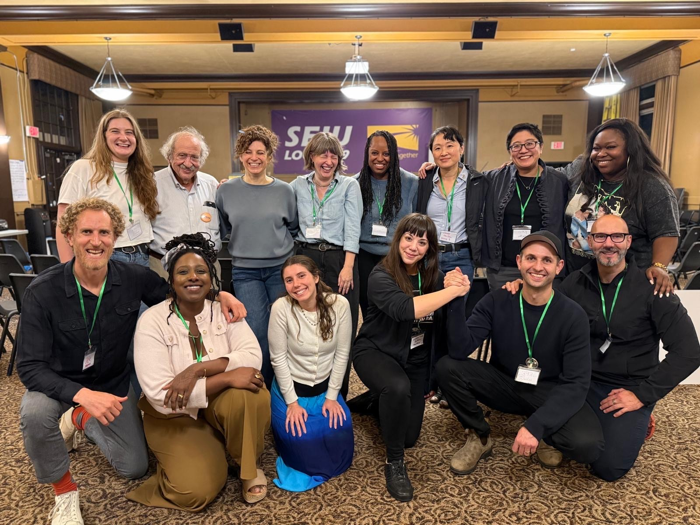
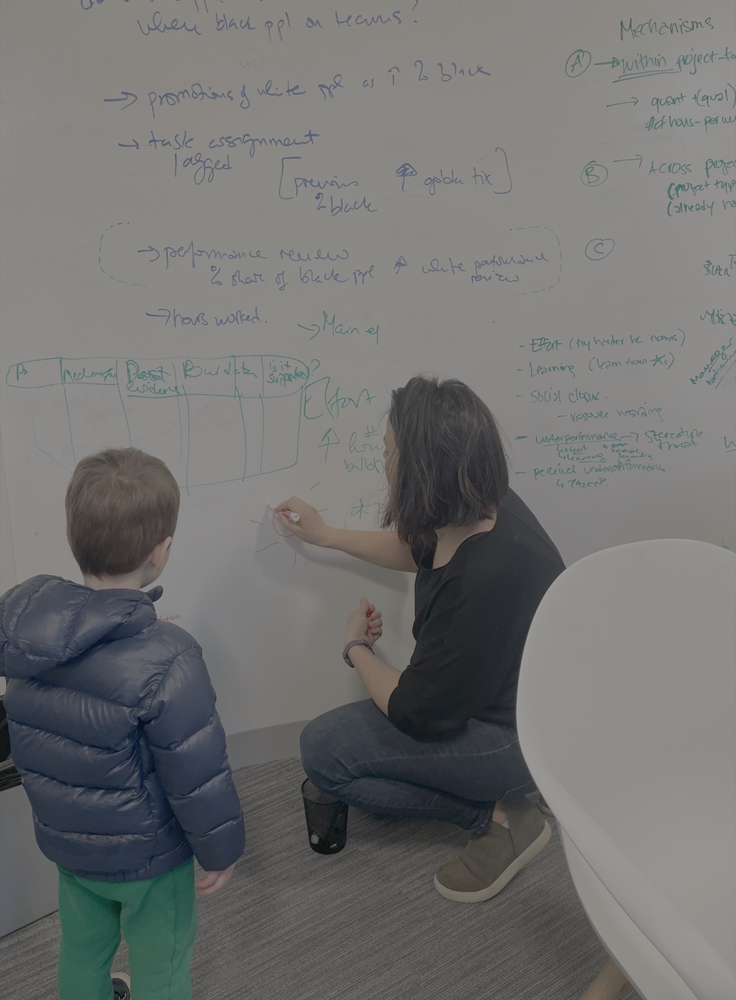
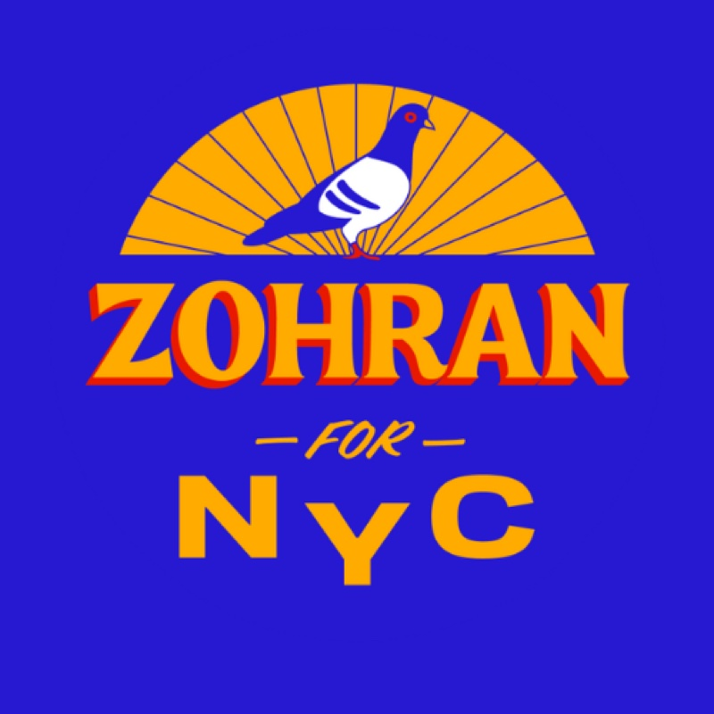
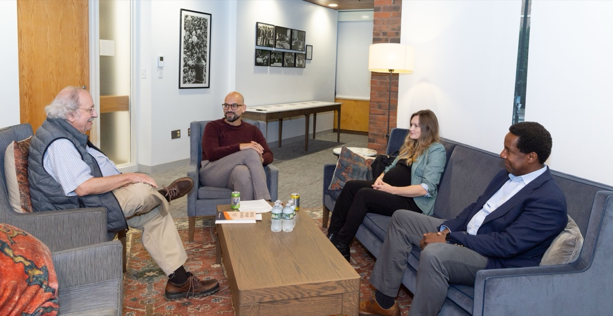

Five streams across longitudinal organizing data, network analysis, embedded ethnography, survey experiments, and qualitative interviews.


POLIS follows state-based organizing groups across the country, looking at how they recruit, develop leaders, and build durable power in their communities. The database tracks, at daily resolution, one-to-ones, research visits, trainings, team meetings, and leadership development activities, alongside more traditional civic engagement work, such as voter contact, lobby days, direct action, and other forms of participation unique to the groups.
Most civic datasets measure mobilizing (who showed up, who voted, how many doors a volunteer knocked). POLIS measures the slower, relational work that happens between elections: the part that much scholarship and most practitioners know matters, but nobody has the data to study at scale.
For each organization, POLIS contains individual-level participation data over time so we can understand who joined once, who stayed, who recruited whom, who took on responsibility, and at what cadence. Companion mixed-methods research links those trajectories to organizational outcomes such as policy wins, narrative shifts, electoral results, and the quality of relationships with elected officials and other decision-makers.
Mixed methods throughout: ethnography, semi-structured interviews, and participatory action research paired with quantitative analysis of the data generated by Groundwork (the lab's open-source relational platform in development, see Practice → Groundwork). The staggered rollout across the network, alpha (1–2 orgs), beta (5–10), full network, creates analytic leverage we will pair with matching on pre-treatment covariates and links to public administrative data.
Funded in part by the Carnegie Fellowship (2024–26), in partnership with the Pro-Democracy Campaign, State Power Fund, Democracy & Power Innovation Fund, and the Organizing Lab.
Democratic erosion is relational before it is institutional. As civic life thins, people accumulate private grievances without the relationships, skills, or shared sense of capacity to convert those grievances into political voice. The Agency stream studies how organizations rebuild that capacity, what we call collective agency.
Collective agency draws on three dimensions usually theorized in separate literatures: the moral-affective orientations that motivate or block group action, the cognitive-strategic skills required to act effectively together, and the relational embeddedness that holds people in mutual commitment.
In partnership with the ACLU of Oregon and the WiLD Project (Wisconsin), we ran two-day organizing workshops in Portland (Nov 2025) and Milwaukee (Dec 2025). We collected pre-post surveys, full participant network maps, and ethnographic field notes.
Replicated across both sites: significant gains in hope and energy (d ≈ 0.72–0.79), declines in isolation and burnout, increases in strategic confidence and the ability to identify effective actions, and a structural rewiring of participants' networks, including 321% growth in cross-organizational ties in Milwaukee and a collapse of closed cliques into cross-cutting ties in Portland.
Collective agency is a relational capacity that organizations can deliberately cultivate through specific, repeatable practices. The paper is part of a broader effort, with Marshall Ganz, to bring emotion and relationships back into social-movement theory, where over-rationalist accounts of strategy have crowded them out.
Most research on civic life asks how citizens read the health of their own democracy. We ask the inverse: how do the people in power read the people doing the organizing back?
A qualitative study of how state and municipal legislators evaluate the constituents and groups pressuring them, which contacts get through, which get dismissed, and what predicts whether advocacy actually moves a vote. Twenty-six interviews complete across Minnesota and Missouri, with Georgia and California fielding through spring 2026.
Across nearly every interview, legislators report listening more to two or three in-depth contacts from informed constituents in their own district than to fifty form emails from across the state. The constituents who move them are personally affected by the issue, well-informed, and able to hold a relationship over time, not the "frequent flyers" who are always at the capitol. Pressure campaigns and "parading" uninformed constituents in front of a legislator damage relationships rather than build them.
A second pattern: relationship density matters at the organizational level, not just the individual level. Groups whose staff, members, and volunteer leaders are each in their own relationship with a legislator are more resilient to turnover than groups where the relationship lives in one lobbyist or one staffer.
Civic organizations are pulled between funders, who increasingly shape priorities through metrics and reporting requirements, and members, to whom many remain normatively committed. When the two diverge, who shapes what the organization does?
Whose priorities do civic actors believe should guide how organizations evaluate their work, funders', members', or those tied to measurable, externally legible outcomes? The professionals who navigate this tension rarely speak openly about how they resolve it; doing so carries reputational and fundraising risk.
A pre-registered list experiment embedded in a large-scale survey of civic professionals. Respondents are randomly assigned to a control group or one of three treatments (measurable impact, funder-driven, or member-driven evaluation). Comparing endorsement rates across groups recovers the proportion of respondents who agree with each sensitive item, without forcing them to say so directly.
Sampling frame of 112,779 civic opportunity organizations drawn from the Mapping the Modern Agora dataset (de Vries, Kim, & Han 2023). Post-stratification weighting (raking) corrects for documented frame bias on IRS incorporation year, financial profile, and organization type. A subset of respondents is invited to a 30-minute follow-up interview, conducted before debrief on the experiment.

In summer 2025, a candidate polling at 0.8 percent five months earlier won the Democratic primary for NYC mayor, then took the general by a margin no one forecast, turning out more voters than the city had seen in fifty years. We had embedded access from day one. The book argues this was not charisma or virality but the downstream consequence of a decade of organizing infrastructure rebuilt block by block.
The campaign's field architect, Tascha Van Auken, was trained in Pennsylvania for Obama 2008. 104,400 volunteers, three million doors, the largest municipal field program in US history. The story of how the people-first politics that built Obama in 2008 got rebuilt for a 2025 mayoral race, and what it tells us about rebuilding mass democratic participation under conditions of institutional decline.
Embedded ethnographic fieldwork from day one of the campaign; longform interviews with campaign leadership, coalition partners, and supervolunteers; campaign data on volunteer recruitment, turf assignment, and door-level contact; and the contributors' own participant-observation in campaign leadership and as field leads, organizers, and trainers. No outside team has been granted this access.
Nine chapters, ten contributors. The volume traces the organizational and biographical precursors to the campaign, the campaign itself as an integrated system of organizing practices, and the implications for scholarship and practice as the campaign moved from winning an election to co-governing a city.
